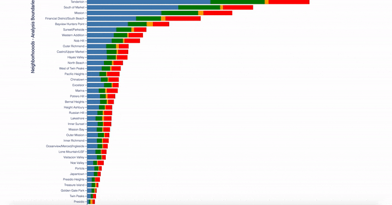
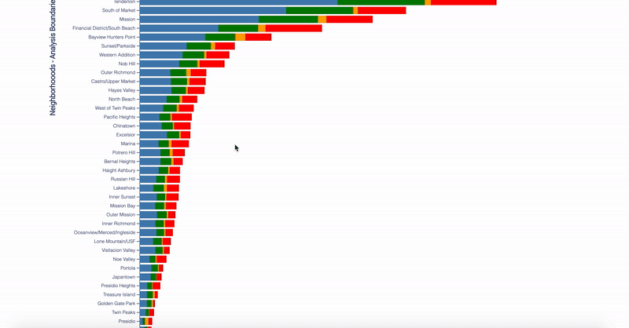
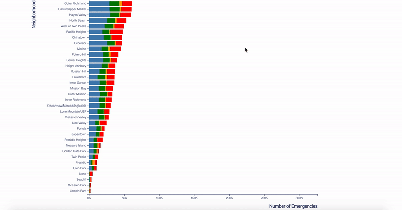

Sum of Number of Emergencies for each Neighborhoods
Data encoding
In my bar chart implementation, the x-axis represents the sum of a number of emergencies, and the y-axis represents all major neighborhoods in San Francisco, while the color represents a different call type group.
So, the longer the bar is, the larger the amount of emergencies that have been recorded from that neighborhood.
Guide of Interactivities
Overall, this implementation has 4 major types of interactivities, including zooming, mouse enter and out, clicking and dragging.
Zooming
TThis implementation allows the user to zoom in to make the detail more readable.
There are two ways to zoom in the chart:
- Move the mouse cursor to white space of the chart's canvas, and double-click, it zooms in the chart by double of its size.
- Move the mouse cursor to the chart's canvas, scroll up.
To zoom out, simply scroll down the mouse.
Hovering
Hovering/mouse entering a color block will highlight the current color block(call type) in this neighborhood and fade out other color blocks(call types) from the same neighborhood.
Besides, it will display a tooltip, which covers the neighborhood name, the call type, the number of emergencies and the ratio of number among the current neighborhood.
Move the mouse out of the color block(call type) will cancel the highlight and make the tooltip disappear.
Clicking
This interactivity is very similar to the hover, but it listens to the mouse clicking. Clicking on a color block(call type) will highlight the current color blocks(call types) in all neighborhoods and fade out other color blocks(call types) from all the neighborhoods.
Also, it will display a tooltip, but it's a little different than the hovering one, because it covers the first 3 same information, but the last information is the ratio of number among the same call type from all neighborhoods.
Move the mouse out of the current block(call type) will cancel the highlight and make the tooltip disappear.
Dragging
The chart also allows readers to drag the bars up and down, the reason to do this is that they will be able to align the bar with the x-axis and use the axis as a ruler to determine the actual data of the bar.
To drag the chart, simply keep pressing the mouse on the white space of the chart's canvas and move the mouse up or down. Remember, don't click on the bars, otherwise, it will highlight the bar instead.
Implementation
Discoveries
- In order to answer the question: is the San Francisco Fire Department fully equipped to handle the multitude and wide range of emergencies that occur in San Francisco? The theme of our midterm project is to use data from the San Francisco fire department to visualize what types of emergencies occur most frequently, and in what parts of the city.
- In my implementation, I demonstrate the sum of emergencies of different call types in different neighborhoods and the sum of emergencies occurring in what parts of the city.
- Based on my implementation, we can find out that Tenderloin, South of Market, Mission and Financial District/South Beach have the largest amount of emergencies. While Seacliff, McLaren Park and Lincoln Park have very small records. So we know that the San Francisco Fire Department should pay more attention to the areas on the top, such as adding more people and equipment or arrange staff from the areas on the bottom.
- What's more, among all types of call, it's obvious to see that the Potential Life-Threating has the most call and most already take up to the half among the 4 types. While the Fire only has a very small number. It means that most emergencies occurred may threaten people's life but few of them are caused by fire. So, the San Francisco Fire Department should consider preparing themselves for protecting citizens rather than preventing fire.
Inspirations
- I think my grouping is not decent enough, specifically, it should have more details about the types. For example, I can mention more about what is behind the Potentially Life-Threating, is it car accidences or factory explosion, etc.
- In the first place, I didn't plan to use the zoom interactivity, because I think a tooltip is good enough. However, I realized that, for some small data, it's very hard to hover or click them as well. So I think adding a zooming functionality could help readers to select them. In this implementation, I chose to use the vertical zooming, which makes the bars wider, but I don't think it works like a charm, because some data is still very thin to see. Next time, I will try to make the bar longer/higher for a bar chart.
- Although hovering and licking seem compatible with this implementation, I feel that using the same tooltip to display very similar information is confusing. Next time, I prefer to use a pop-up or another chart to display similar content.
- Last but not least, wrangling the data or converting the original data into a more readable format, such as JavaScript object and array or a JSON object and organizing the data into a more desirable form is very helpful.